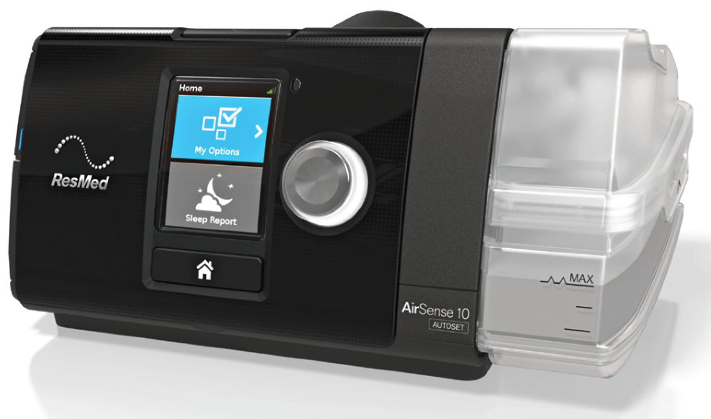

The AirSense™ 10 AutoSet™ and AirSense 10 Elite are ResMed's premium auto-adjusting pressure and Continuous Positive Airway Pressure (CPAP) devices.
The AirSense 10 AutoSet self-adjusting device is indicated for the treatment of obstructive sleep apnoea (OSA) in patients weighing more than 30 kg. It is intended for home and hospital use.
The humidifier is intended for single patient use in the home environment and re-use in a hospital/institutional environment.
The AirSense 10 Elite device is indicated for the treatment of obstructive sleep apnoea (OSA) in patients weighing more than 30 kg. It is intended for home and hospital use.
The humidifier is intended for single patient use in the home environment and re-use in a hospital/institutional environment.
The clinical benefit of CPAP therapy is a reduction in apnoeas, hypopnoeas and sleepiness, as well as improved quality of life.
The clinical benefit of humidification is the reduction of positive airway pressure related side effects.
Positive airway pressure therapy may be contraindicated in some patients with the following pre-existing conditions:
You should report unusual chest pain, severe headache, or increased breathlessness to your prescribing physician. An acute upper respiratory tract infection may require temporary discontinuation of treatment.
The following side effects may arise during the course of therapy with the device:
The AirSense 10 includes the following:
Contact your care provider for a range of accessories available for use with the device including:
If this is your first time using your AirSense 10 device, we recommend starting with:
Use the navigation menu to access different sections, or visit the Contents page for a complete overview of all available sections.